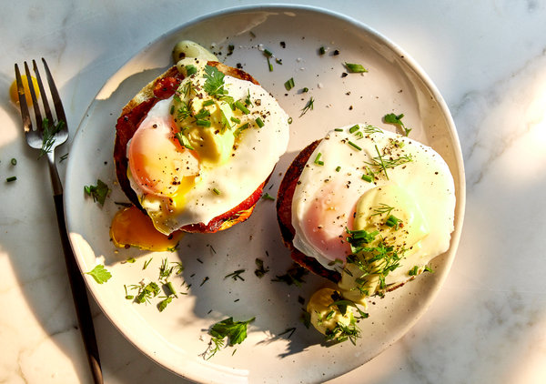

Eggs Benedict with Hollandaise Sauce

One of my favorite breakfast recipes to make for any special occasion! English muffins with bacon
and poached Eggs topped with a drizzle of Hollandaise sauce, the Eggs Benedict is truly a hearty
and healthy breakfast meal that will start your day on a positive note and will have your taste buds wanting
for more.
Ingredients
- 4 egg yolks
- 3 1/2 tablespoons lemon juice
- 1 pinch ground white pepper
- 1/8 teaspoon Worcestershire sauce
- 1 tablespoon water
- 1 cup butter, melted
- 1/4 teaspoon salt
- 8 eggs
- 1 teaspoon distilled white vinegar
- 8 strips Canadian-style bacon (or any preferred style bacon
- 4 English muffins, split
- 2 tablespoons butter, softened
Directions
- To Make the Hollandaise: Fill the bottom of a double boiler part-way with water.
Make sure that water does not touch the top pan. Bring water to a gentle simmer. In the top of the double boiler, whisk
together egg yolks, lemon juice, white pepper, Worcestershire sauce, and 1 tablespoon water.
- Add the melted butter to egg yolk mixture 1 or 2 tablespoons at a time while whisking yolks constantly.
If hollandaise begins to get too thick, add a teaspoon or two of hot water. Continue whisking until all
butter is incorporated. Whisk in salt, then remove from heat. Place a lid on pan to keep sauce warm.
- Preheat oven to broiler setting.
To Poach Eggs: Fill a large saucepan with 3 inches of water.
Bring water to a gentle simmer, then add vinegar. Carefully break eggs into simmering water, and allow to cook
for 2 1/2 to 3 minutes. Yolks should still be soft in center. Remove eggs from water with a slotted spoon and set on a warm plate.
- While eggs are poaching, brown the bacon in a medium skillet over medium-high heat and toast the English muffins on a baking sheet under the broiler.
- Spread toasted muffins with softened butter, and top each one with a slice of bacon, followed by one poached egg. Place 2 muffins on each
plate and drizzle with hollandaise sauce. Sprinkle with chopped chives and serve immediately.